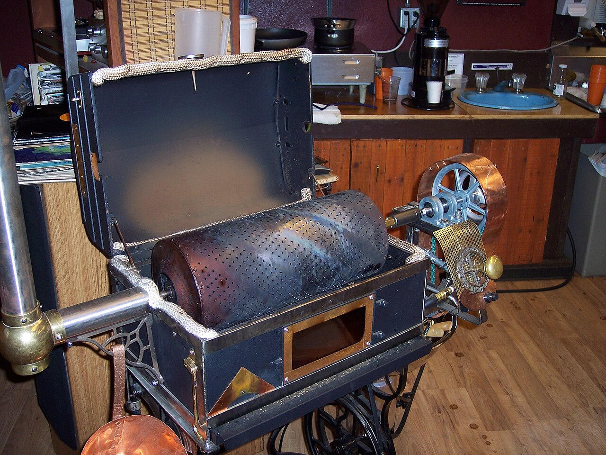
京都府亀岡市篠町・住宅街の自家焙煎珈琲店
小さな焙煎機で、
一杯ぶんの時間をていねいに。
遠赤外線の焙煎機でじっくり焼いた珈琲豆とドリップパック。住宅街の一角で、静かに焙煎しているお店です。
お店のこと
住宅街の一角にある、小さな焙煎所。
紹介記事によると、OKU COFFEE ROASTERY+は京都府亀岡市篠町、JR馬堀駅から歩ける住宅街にある自家焙煎の珈琲店です。ご夫婦で営まれていて、2022年5月に新店舗としてオープンしたと紹介されています。
焙煎には小型でチタン製の「与謝野ロースター」を使い、遠赤外線でじっくり火を入れるとされています。スペシャルティコーヒーを中心に約20種類の豆を扱い、豆の販売とドリップパックのほか、店内(少人数)での飲用やテイクアウトにも対応していると紹介されています。
情報源: osumituki.com(2022年の紹介記事)/グルコミ(店舗情報)/Instagram
店名「OKU」の意味や開業の経緯は確認できていません。「住宅街でひっそりと」というトーンは制作側のイメージで、お店の考えを示すものではありません。
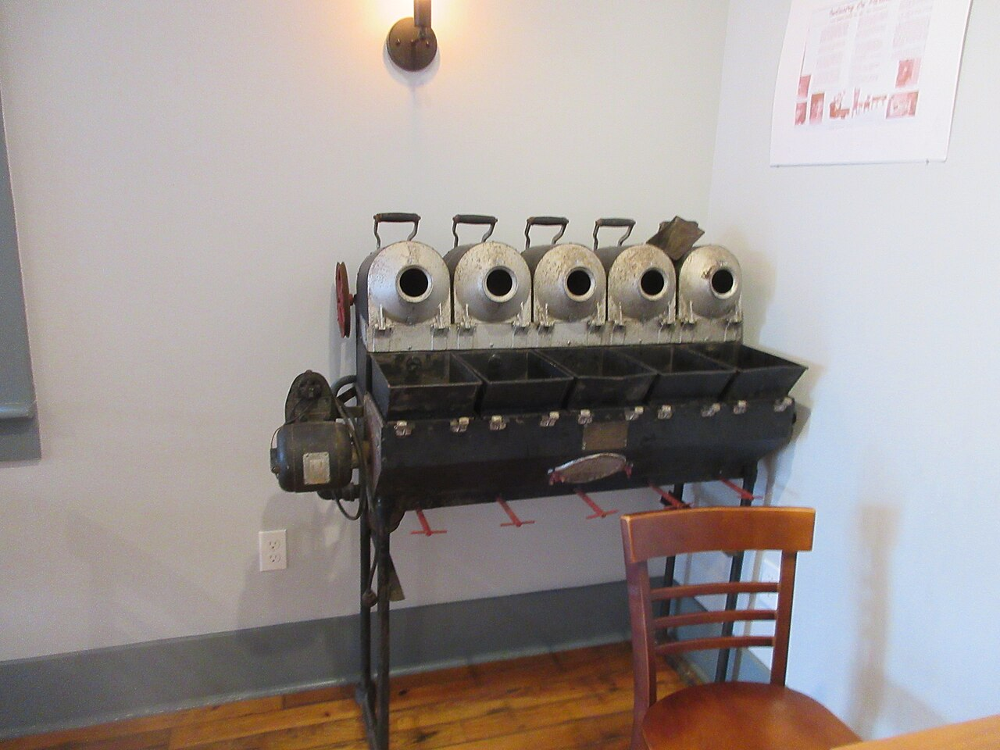
珈琲と豆
焙煎の香りまで、持ち帰れる。
写真は、焙煎や珈琲のイメージを伝えるフリー素材です。お店の商品・設備そのものではありません。
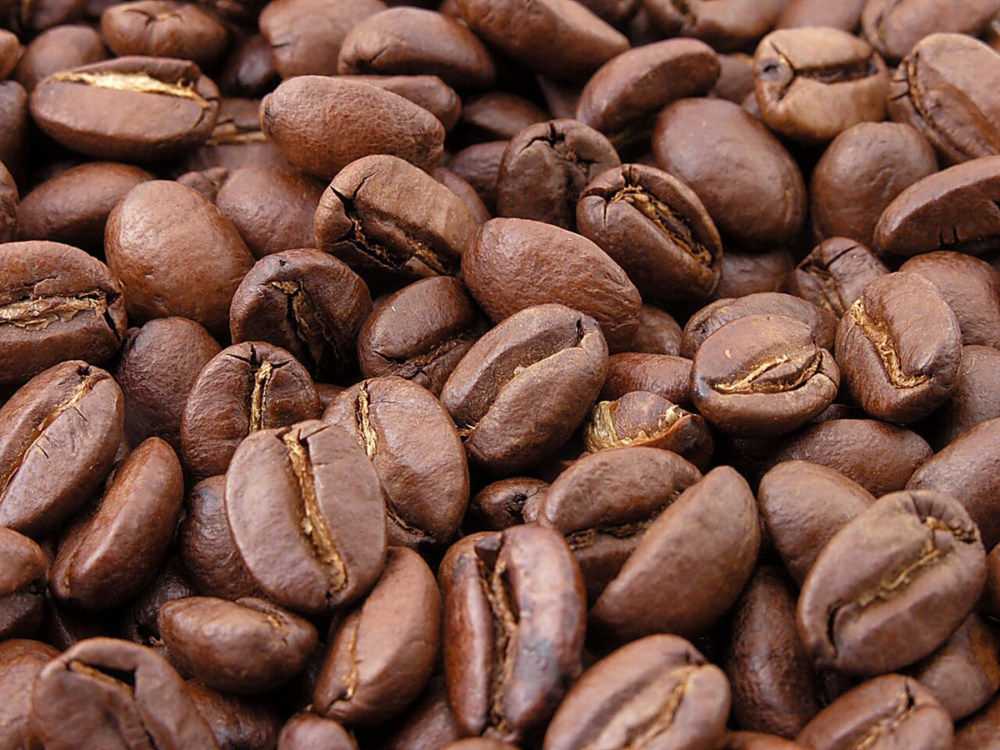
自家焙煎の珈琲豆
紹介記事では、スペシャルティコーヒーを中心に約20種類を扱い、100g単位で買えると紹介されています。価格は準備中です。
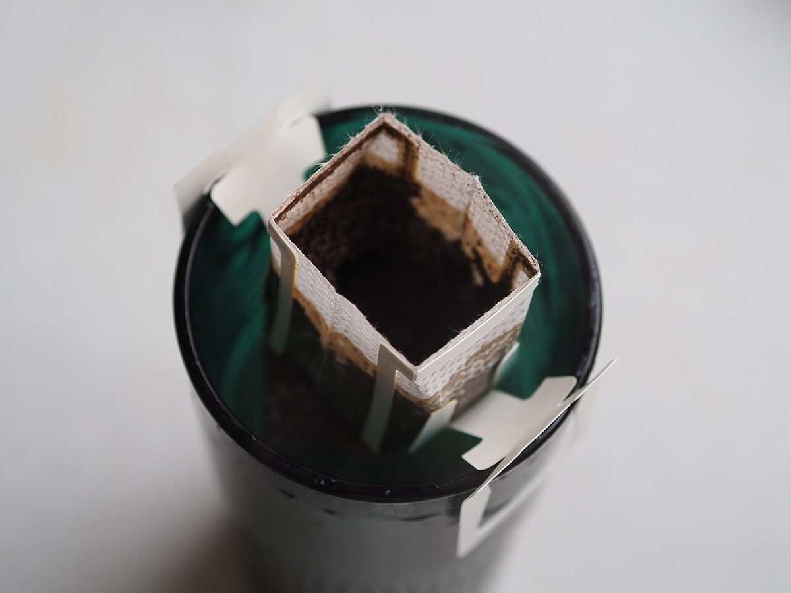
ドリップパック
お湯を注ぐだけで淹れられるドリップパックも販売していると紹介されています。価格は準備中です。
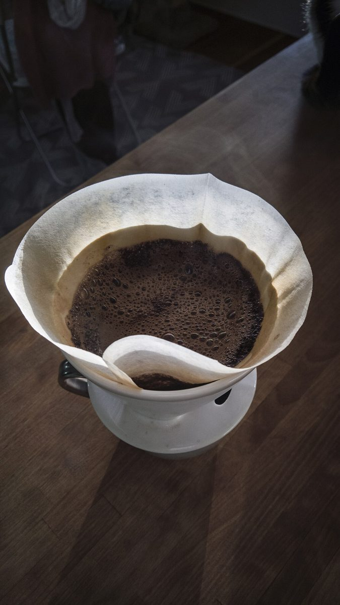
店内で一杯
店内の飲用やテイクアウトに対応していると紹介されています。メニュー・価格は準備中です。

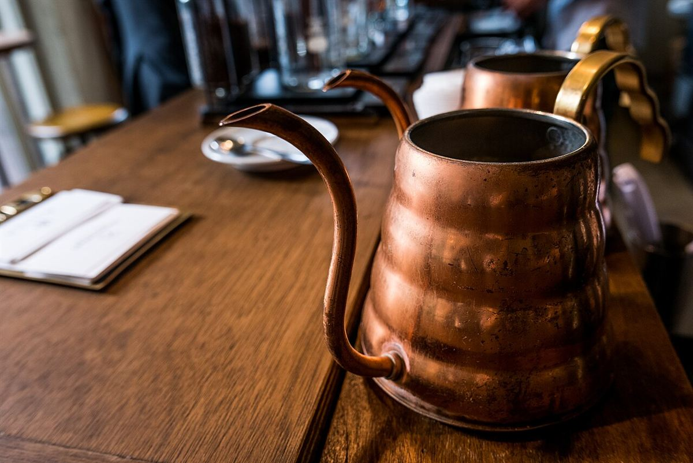
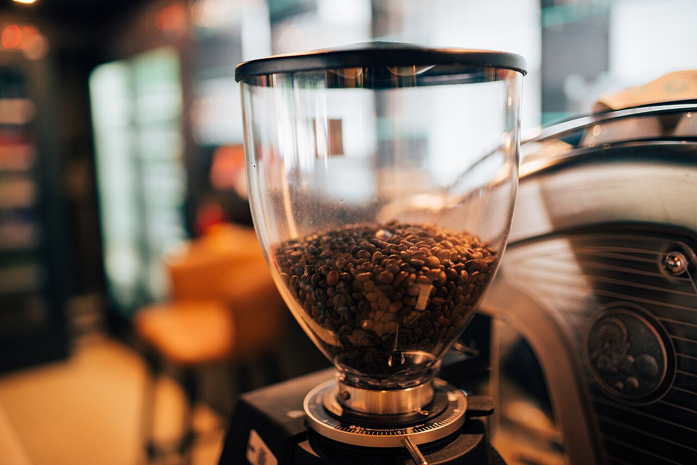
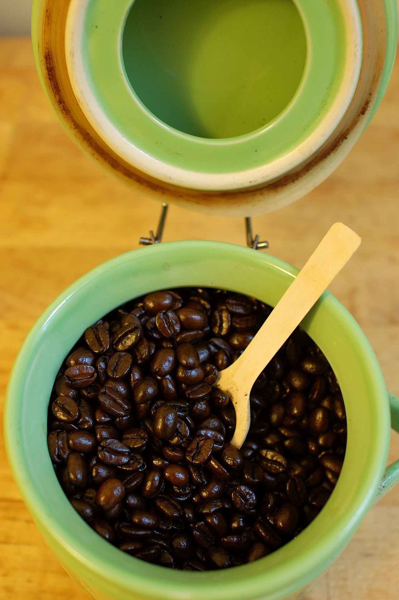
営業時間・メニュー・価格は変わることがあるため、掲載せず「準備中」としています。最新情報はInstagramをご覧ください。
焙煎のイメージ
生豆が、香りのある豆になるまで。
生豆を火にかけ、色づき、はぜ、香りが立つ。焙煎の流れを、フリー素材の写真でイメージしました(お店の写真ではありません)。
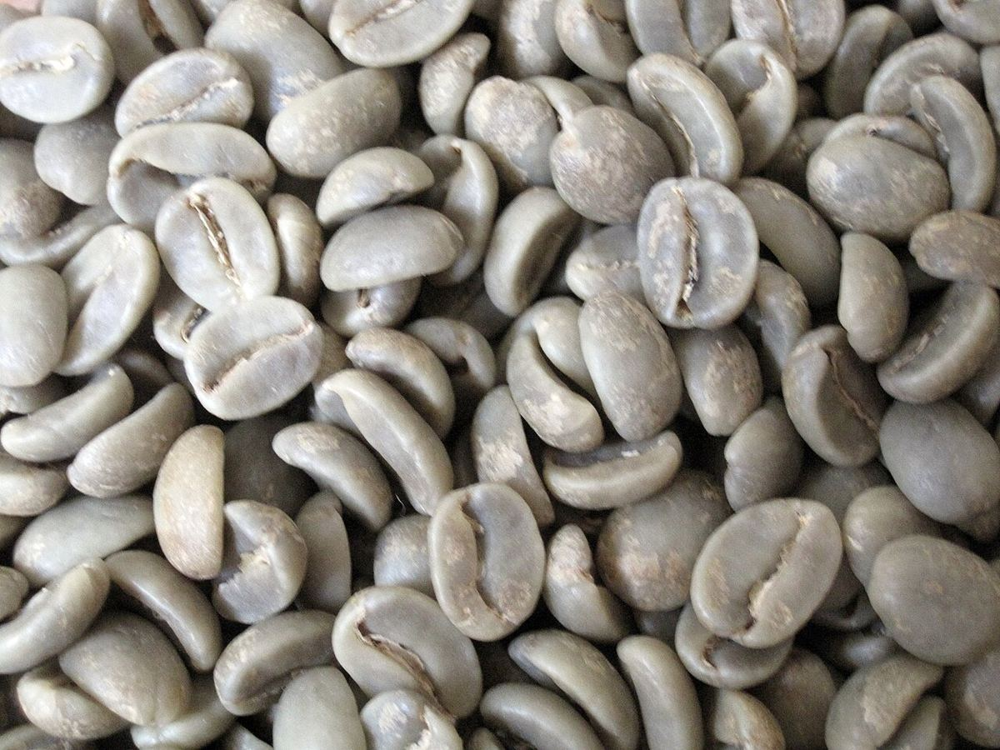

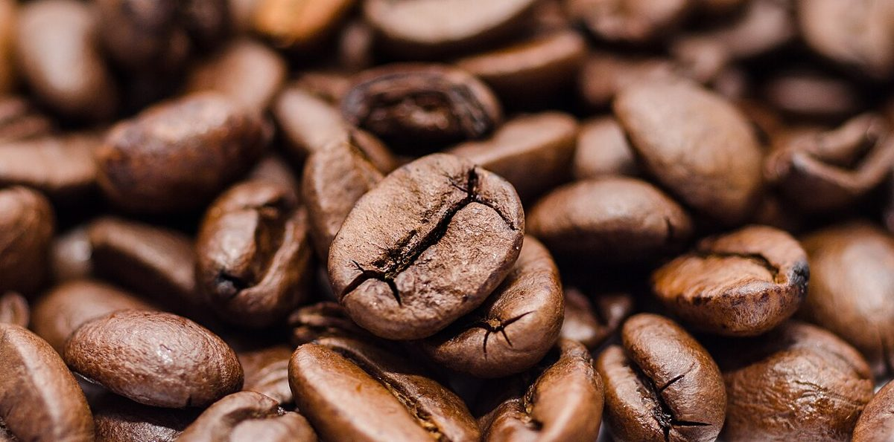
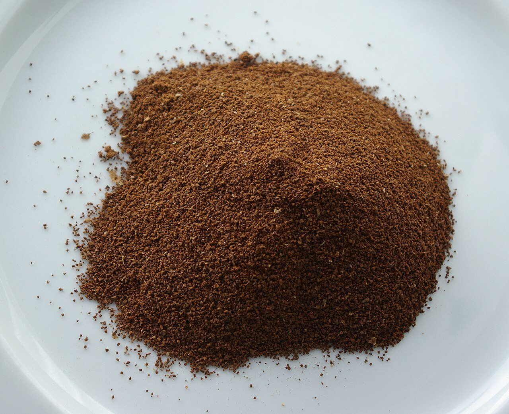
お客様の声(イメージ)
こんなふうに感じていただけたら。
以下は制作側が作った「イメージ例」です。実在のお客様の声ではありません。
「飲み比べの試飲があると、どの豆にしようか迷う時間まで楽しいです。」
「家で淹れる朝の一杯が、このお店の豆だと少し特別になります。」
「ドリップパックを手土産にしたら、喜ばれました。」
アクセス
お店の場所とご案内
| 所在地 | 〒621-0824 京都府亀岡市篠町見晴5丁目7−1 |
|---|---|
| 最寄り | JR馬堀駅から徒歩圏と紹介されています(所要時間は記事により異なります) |
| 電話 | 準備中 |
| 営業時間 | 準備中 |
| 定休日 | 準備中 |
| 駐車場 | 準備中 |
| SNS | Instagram @oku_coffee_roastery |
営業日・時間は変更されることがあります。ご来店前にInstagramでご確認ください。